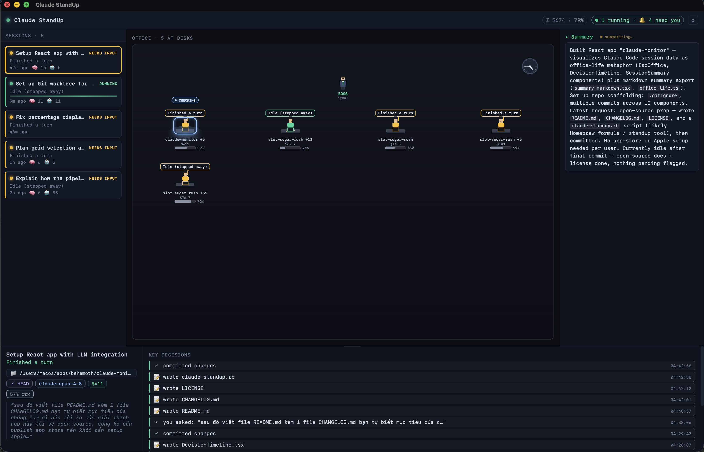

One desk per session, color-coded by state. A glance shows who's running, who needs you, who's idle.

A live status bubble ("Running tests", "Waiting for you", "Idle"), color-coded by state.
Every prompt you send beams to that agent's desk, so you remember what you asked each one to do.
Per-session USD cost and a context-window HP bar, aware of the 200k vs 1M model windows.
Prompts answered, PRs opened, subagents spawned, commits, files written: a quiet timeline.
A short rundown per session, generated locally by the claude CLI. No API key.
Reads ~/.claude transcripts read-only. No telemetry, nothing leaves your machine.
Homebrew (after a release is published):
brew tap bachdx2812/tap brew install --cask claude-standup
Or build from source:
git clone https://github.com/bachdx2812/claude-standup.git cd claude-standup pnpm install ./scripts/build.sh # output: src-tauri/target/release/bundle/
Requires macOS 10.15+, Rust (rustup stable), Node + pnpm. See the README for details.